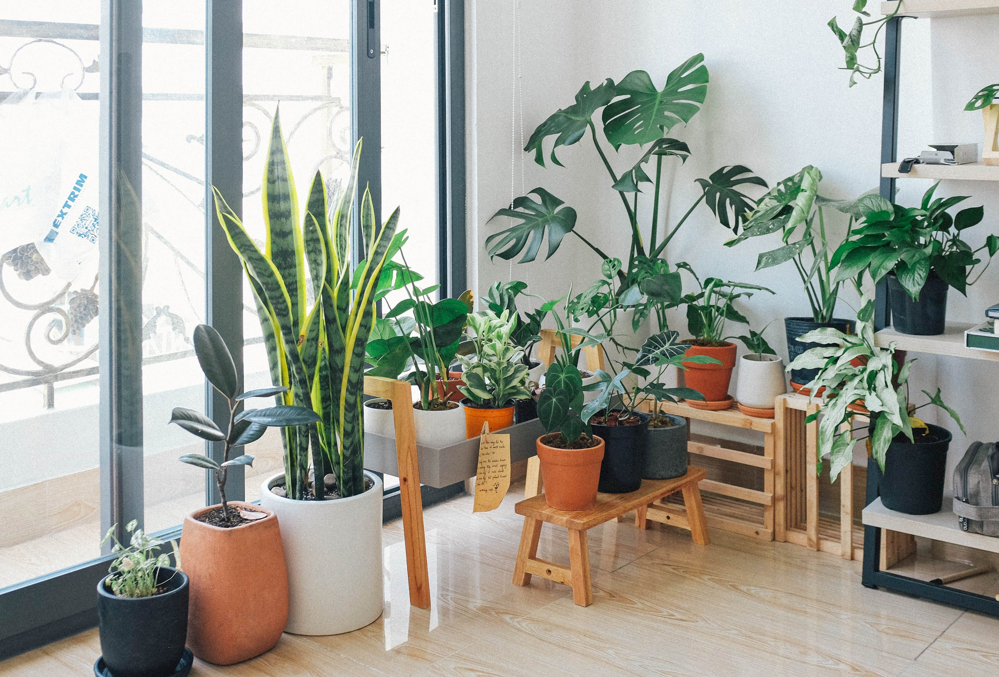

My main expertise lies in Web Development, particularly;
- HTML
- CSS
- Javascript
However, I do dabble in UX/UI design, illustration and market research.
If you like my site, don't hesitate to reach out!
PROJECTS
PLANT WATERING SCHEDULE
The plant watering scheduler project was created to automate and streamline the process of watering plants. It addresses the challenge of maintaining a consistent watering schedule for different types of plants by leveraging Python programming. The project involves setting up a system that can intelligently determine when each plant needs watering based on factors such as plant type, soil moisture, and environmental conditions.
MOUNTAIN BIKE API
The Python-based mountain biking app, developed using Flask and PostgreSQL, is designed to enhance the mountain biking experience by providing a comprehensive platform for tracking rides, discovering new trails, and connecting with fellow riders. The app incorporates features such as country-specific trail databases, user-generated content, ratings, comments, and personalized recommendations based on mountain bike types.